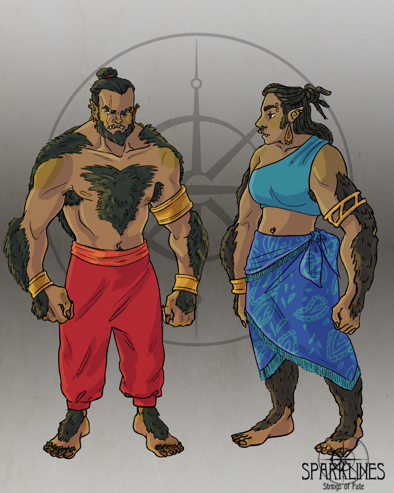

My own TTRPG Project
“Sparklines: Strings of Fate”
Role:
Creator, Game Designer, and Narrative Developer
Duration:
2013 – Present
Description:
'Sparklines: Strings of Fate' is my original tabletop RPG system and world, which I have been developing for over 10 years.
The project includes creating game mechanics, designing levels, developing game modules, and crafting an extensive lore-filled world.
Through this project, I have honed my skills in game design, storytelling, and player engagement, while continuously adapting and refining mechanics based on feedback and testing.
Game Mechanics example:
This mechanic adds detailed stamina management for characters during active scenes (e.g., battles, random encounters). Each character gains a pool of stamina points (sp) equal to their Vigor die (e.g., a character with a d6 Vigor die gains a maximum of 6 sp). Stamina is spent during "high-activity" scenes and replenishes at the end unless stated otherwise.
Standard Actions & Stamina Costs:
- Attack: 1 sp
- Defend: 1 sp
- Wild Attack: +1 sp (1 for attack +1 for enhancement)
- Running: 1 sp
- Move: Free (if through difficult terrain, 1 sp)
- Aiming: 1 sp
- Shooting (Extreme Range): +1 sp
- Casting Spells: 1 sp per spell level (+1 sp for empowered spell)
Additional Rules:
- Special actions gained through Edges or other abilities have specific stamina costs mentioned in their descriptions.
- If the character gains the Shakened status effect and/or a Wound, they lose 1 sp.
Narrative and World-Building:
Created in-depth lore, character histories, and world elements. Developed and refined narratives for multiple races and factions within the game world, such as the orc race.
Orc race lore (short version):

A ferocious folk, dwelling in different places across the Great Continent, from the Lands of a Thousand Swords and further to the Frigumar. In the times of yore, orcs were a scourge of the land and posed a great threat to the emerging civilization.
The other nations considered them reckless animals, driven solely by hunger and violence.
Like a thunderstorm, the ruthless tribes raided the settlements and caravans, bringing nothing but pillage and slaughter. The orcs refer to this historical period as to the Eternal Hunt. The Hunt lasted up until the time when several orcish tribes began to negotiate with the highly developed civilization of the Royal Elves.
The exact way in which the Eternals managed to tame the wild tribes remains uncertain. However, the orcs had soon been divided into two groups.
One stayed loyal to the traditions of old and followed the path of devastation, whereas the other one decided to heed the words of the wise elves, aiming for civilization and prosperity.
Level and Module Design:
Developed adaptable game modules and levels with a focus on varied player dynamics. Each level and module was tested for balance and gameplay flow.
Artistic Direction:
Worked on the creation of concept art for races and environments. Designed world maps and visual representations to support storytelling.
Adaptability:
The system is designed to be flexible and can be customized for different gameplay experiences and player styles.
Player Engagement:
Successfully engaged a dedicated group of players who continuously test and provide feedback on the system.
Ongoing Development:
Continuously improving and expanding the game based on testing and new ideas.
.png)